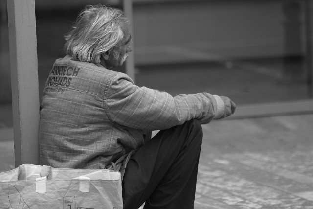
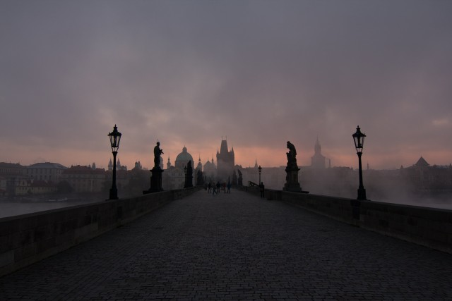
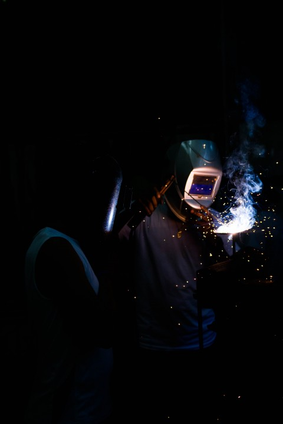
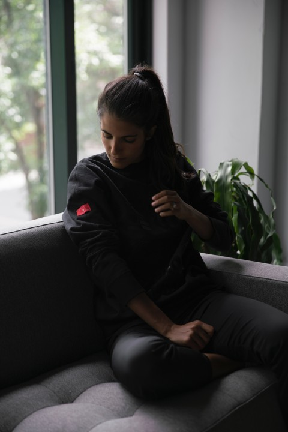
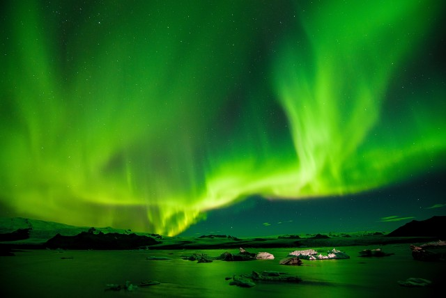
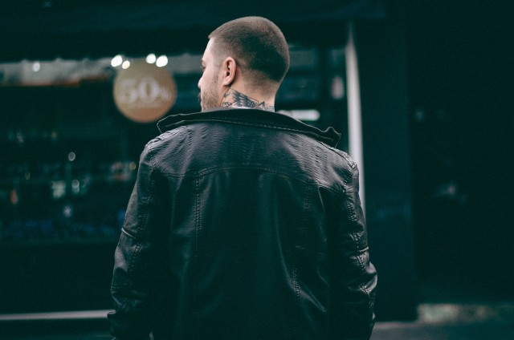
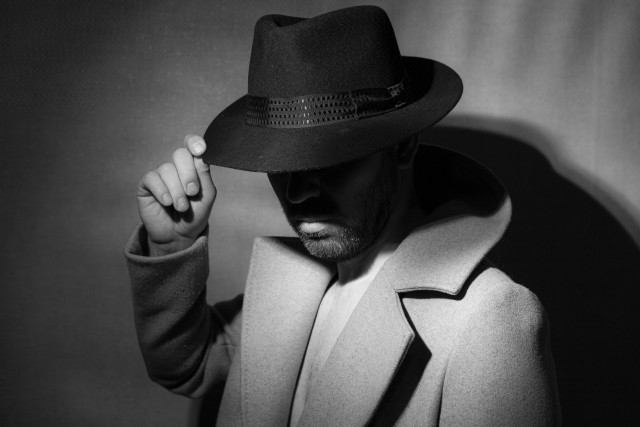

Фритрек и нулевой спринт: Подготовка к работе
</Энтузиазм>
Это было самое начало пути. На этом этапе важно было проникнуться основами и настроиться на учёбу. И, возможно, подумать, как новые знания могут повлиять на ваше будущее.
Полно решимости.
</html>
</Энтузиазм>
Это было самое начало пути. На этом этапе важно было проникнуться основами и настроиться на учёбу. И, возможно, подумать, как новые знания могут повлиять на ваше будущее.
Полно решимости.

</Нет сомнений>
На первых этапах мы работали со страхами и сомнениями, которые часто испытывают новички. Один из них - страх перед чистым листом. Это, конечно же, намного сложнее, чем боязнь куска бумаги. Часто за этим ощущением скрывается более глубокие вопросы: с чего начать? а вдруг будет слишком сложно? что, если я не справлюсь?
Впереди только победы.

</Гордость>
Первый проект - позади! Но это все еще самое начало пути. Радость могла быстро померкнуть и смениться ожиданием провала. Или вы, наоборот, могли вдохновиться успехами и поверить в себя.
Ощущение свободы.

</Напряжение>
На этом этапе вы уже достаточно разбирались в основах вёрстки, чтобы понять, как много еще впереди. Вы могли попытаться погнаться за идеалом и понять, что он недостижим. А, может, вы вовсе и не подвержены перфекционизму и вместо того, чтобы сделать идеально, старались просто сделать.
Чувство неизвестности.

</Не одни>
Всё это время вы были не одиноки (хотя, возможно, иногда и чувствовали, что одни против целого мира). Вас окружали одногруппники, команда сопровождения и просто близки люди, которым можно пожаловаться, если очередной макет просто так не поддавался. Осваивать что-то новое легче, когда рядом есть единомышлиники, не правда ли?
Спадающая напряженность.

</Свой подход>
На этом курсе вы постоянно решали разные задачи. В какой-то момент вам могло показаться, что решения просто иссякли. Значит, пришло время посмотреть на задачу под другим углом.
Разное мышление.

</Неопределенность>
Во время учёбы часто возникает чувство, когда не знаешь, за что хвататься. Вроде и проектную пора сдавать, и задачи хочется порешать, и в теории получше разобраться, и жизнь не забыть пожить. В такие моменты очень нужна концентрация. Вспомните, откуда вы ее черпали.
Желание сосредоточиться.

</Продолжение>
Сейчас вы уже очень много знаете о вёрстке. Но это только начало. Во-первых, впереди еще много материала про «красотищу». Во-вторых, с окончанием курса учёба не заканчивается. Вёрстка - это целый мир. И этот мир постояноо меняется. Познать его полностью не получится, но это тот случай, когда важен сам процесс познания. Ведь часто пусть - и есть результат.
Нельзя сдаваться.